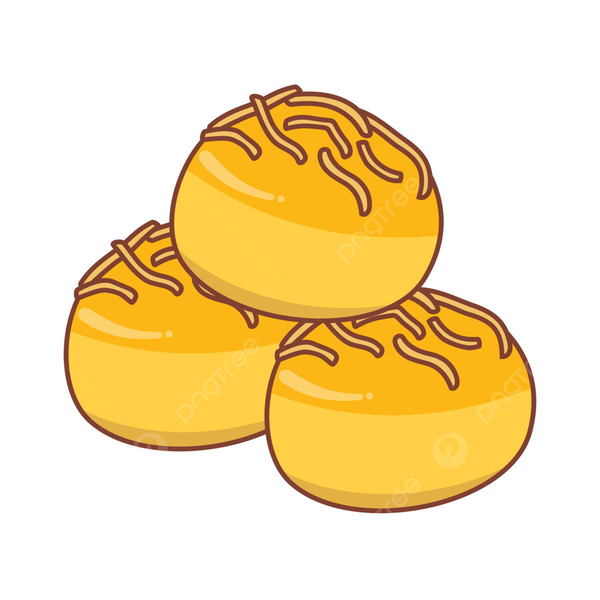

Dibuat Oleh : Shaquille
List bahan nastar
Campur Bahan: Kocok mentega dan gula halus sebentar, lalu masukkan kuning telur. Aduk hingga rata. Tambahkan Tepung: Masukkan campuran tepung terigu, maizena, dan susu bubuk yang sudah diayak. Aduk perlahan hingga jadi adonan yang bisa dibentuk. Bentuk Nastar: Ambil sedikit adonan, pipihkan, isi dengan selai nanas, lalu bulatkan hingga rapi. Panggang Awal: Tata nastar di loyang dan panggang di oven suhu 140°C selama 20 menit. Oles dan Panggang Lagi: Setelah dingin, olesi nastar dengan campuran kuning telur. Panggang lagi 10-15 menit hingga matang dan warnanya keemasan.